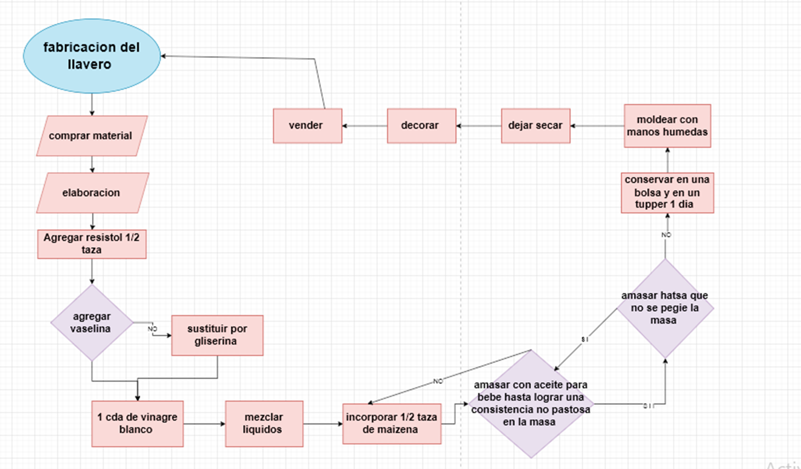

Te invitamos a conocer el proceso de produccion de nuestro procucto.
Nuestro producto esta hecho de porcelana fria casera, para crear nuestra porcelana se usa:
- Resistol 850 (1/2 taza)
- Vinagre blanco (1cd)
- Aceite para bebe (1cd)
- Vaselina o glicerina (1cd)
- Maicena (1/2 taza)
Ya que conoces nuestro proceso de produccion podrias darle un vsitaso al siguiente diagrama de flujo para
conocer mas a detalle el proceso por si surgio alguna duda.
